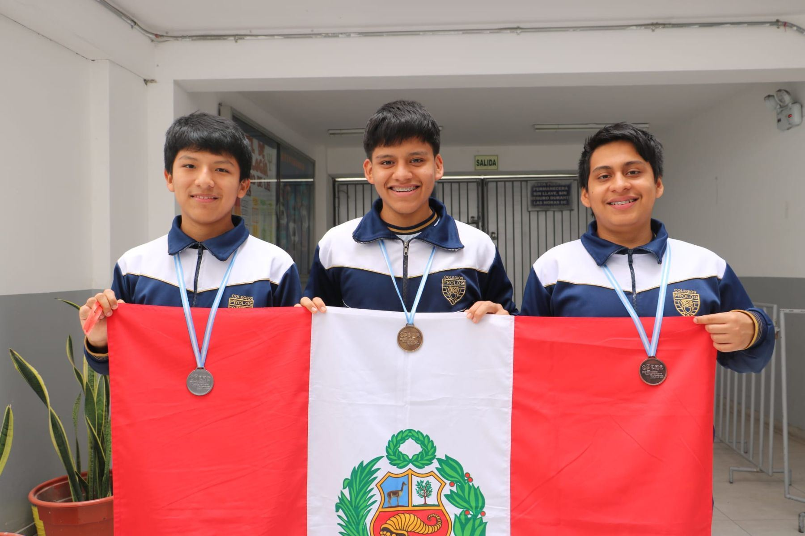

¡Arriba, Perú!. El grito de orgullo y emoción resume el sentimiento de una nueva generación de jóvenes peruanos que sigue destacando en las competencias internacionales más rigurosas del ámbito académico. Una vez más, el esfuerzo, la disciplina y la pasión por los números han dado frutos excepcionales para el país en el escenario internacional.
La delegación nacional de escolares ha obtenido una destacada participación en la Olimpiada Iberoamericana de Matemática, logrando cosechar medallas de oro, plata y bronce. Este importante certamen reúne año tras año a las mentes jóvenes más brillantes de Iberoamérica, poniendo a prueba sus capacidades analíticas, su creatividad para la resolución de problemas complejos y su perseverancia ante desafíos matemáticos de nivel avanzado.
Un esfuerzo constante por la excelencia académica
Detrás de cada presea obtenida se encuentra una historia de sacrificios, horas incontables de estudio, resolución de complejos teoremas y el respaldo fundamental tanto de sus familias como de sus instituciones educativas. Los escolares peruanos han demostrado una vez más que el talento nacional en ciencias exactas compite de igual a igual con los mejores exponentes de la región iberoamericana.
La preparación de estos jóvenes no es producto del azar. Forma parte de un riguroso proceso de selección y entrenamiento intensivo impulsado por diversas instituciones comprometidas con el desarrollo educativo del país, las cuales buscan identificar y potenciar el potencial de los estudiantes peruanos en disciplinas clave como la matemática.
Impacto y reconocimiento internacional
El desempeño de la selección peruana en esta edición de la Olimpiada Iberoamericana refuerza la sólida reputación que el país ha venido construyendo a lo largo de los años en estas justas académicas. Con cada participación, los estudiantes reafirman que el Perú es una potencia regional en competencias de matemáticas, inspirando a miles de niños y adolescentes a perder el miedo a los números y a involucrarse con mayor entusiasmo en el estudio de las ciencias.
Las medallas de oro, plata y bronce obtenidas en esta oportunidad no solo representan un galardón individual para cada uno de los escolares, sino también un triunfo colectivo que llena de orgullo a todo el país. La comunidad educativa y la sociedad en general celebran este nuevo hito que enaltece el nombre del Perú ante los ojos del mundo.
Mientras los jóvenes seleccionados retornan a sus hogares con sus preseas, queda patente la urgente necesidad de seguir impulsando y apoyando decididamente el talento académico desde las etapas escolares, asegurando así que más peruanos continúen brillando en el firmamento de la ciencia internacional.